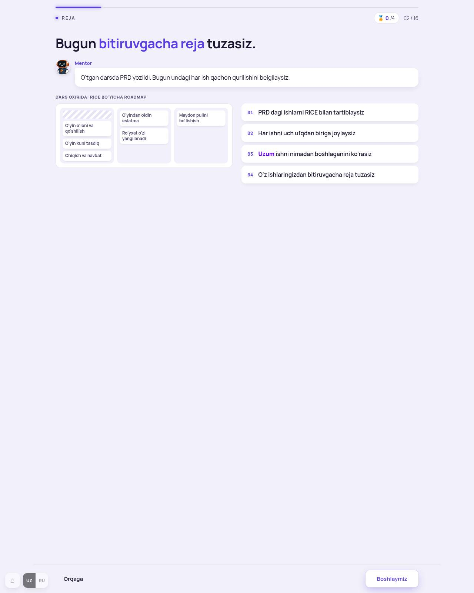
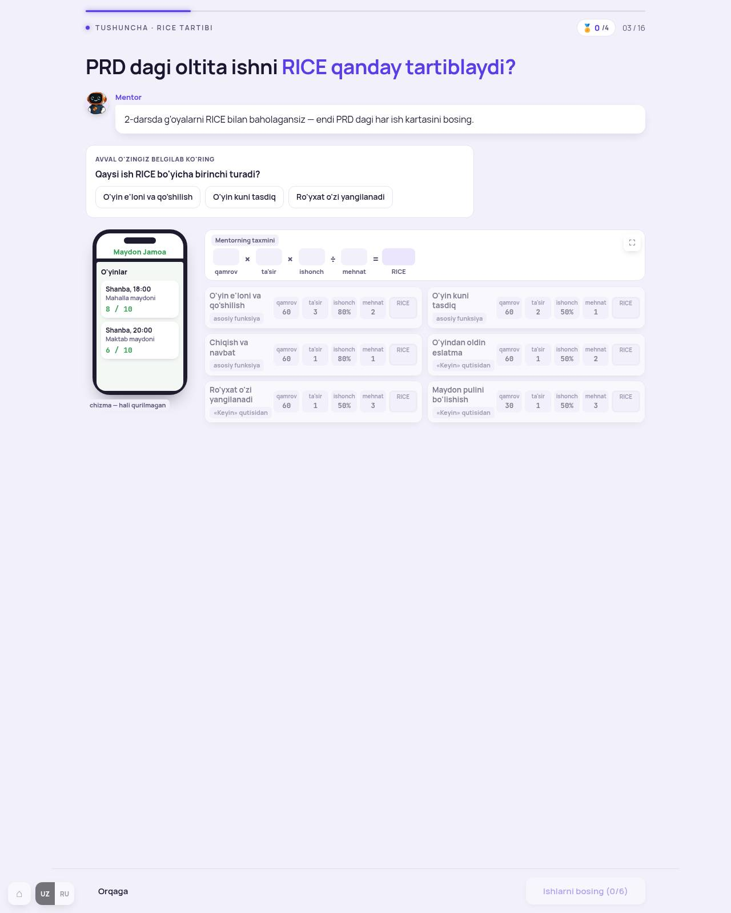
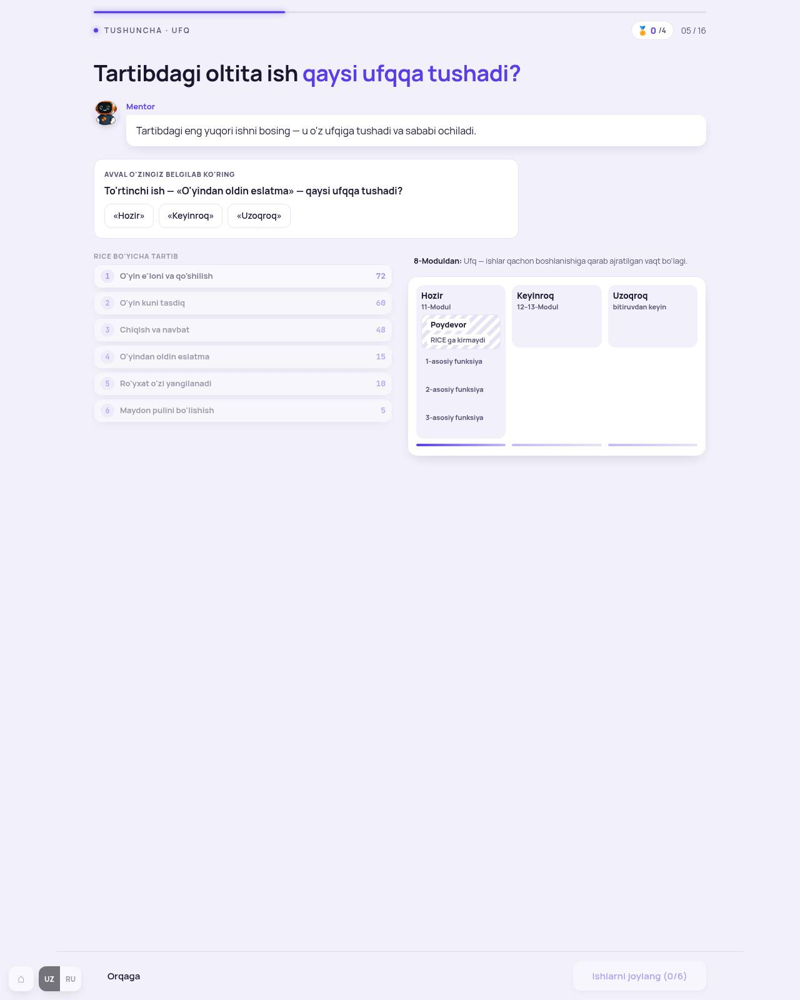
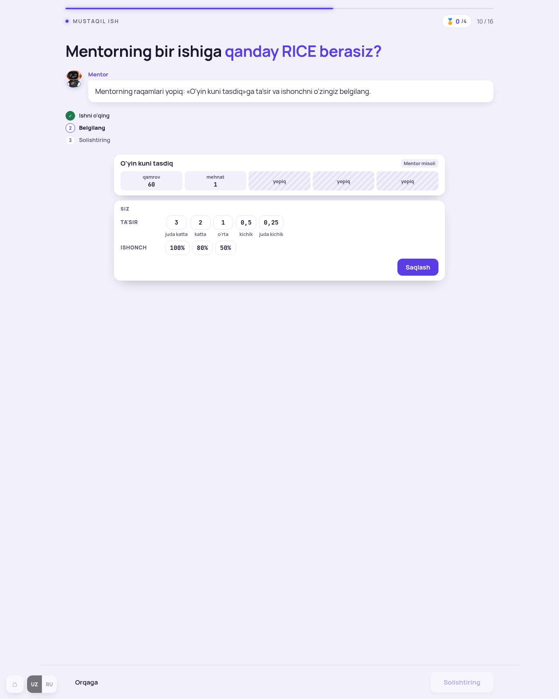
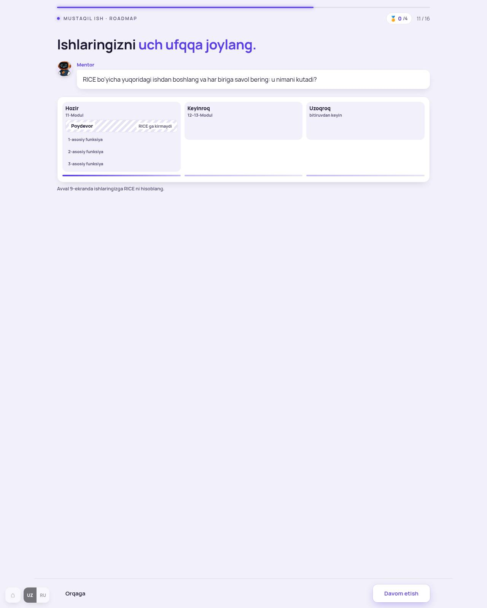

Dars oxirida o'quvchi: PRD dagi ishlariga RICE hisoblab, ularni uch ufqqa joylaydi — bitiruvgacha roadmap. Bu dars ham pilot (172) bilan qurilgan: 8-ekran bitta karta, 10-ekran bittadan. Tuzatishlar: reja, bashorat yolg'izligi, ikki kartani bittaga.
Avtopilot: hammasi A deb qurildi, QA saytda. Ertalab ko'rib, nima yoqmasa — raqami bilan.
RICE sonlari (qamrov 60, ta'sir, ishonch, mehnat) 4-darsdagi yozuvlar soniga tegmaydi. Tekshirildi: «10 intervyu», «5 o'yinchidan» matnlari yo'q.

Qilindi: Uzum bandi olindi (voqea) — 3 band.

Tashxis. O'quvchi bashoratga javob bermay turib oltita kartaning 24 sonini ko'radi. Qilindi (213.7): bashorat yolg'iz; tanlangach telefon, formula va kartalar kirib keladi (kartalar allaqachon bittadan — faqat navbatdagisi halqada).

Qilindi (213.7): bashorat yolg'iz; tartib va uch ufqli doska tanlangach keladi.

Qilindi: belgilash bloki (ta'sir · ishonch · Saqlash) ish kartasining ichida, chiziq bilan ajratilgan — bitta karta.

Qilindi: doska va ish kartasi (uch ufq tugmasi, xato, sabab) bitta kartada; ish kartasi doska ostida, binafsha ramkada.